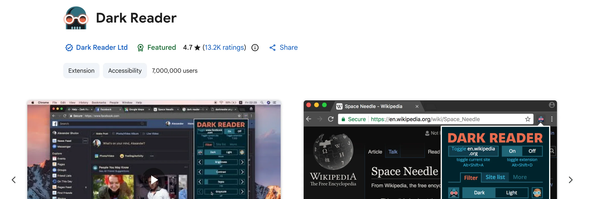
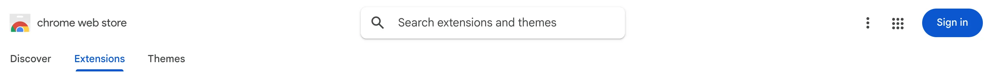
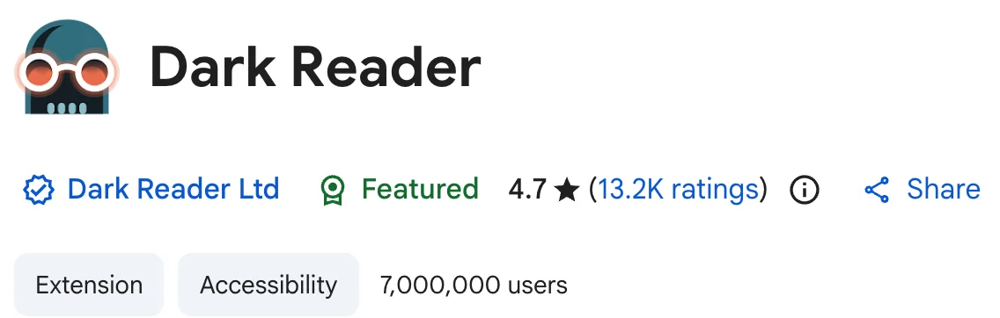
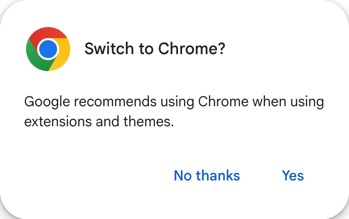
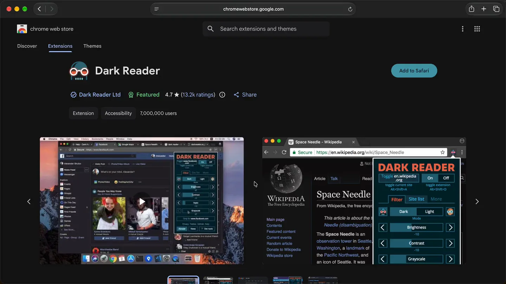
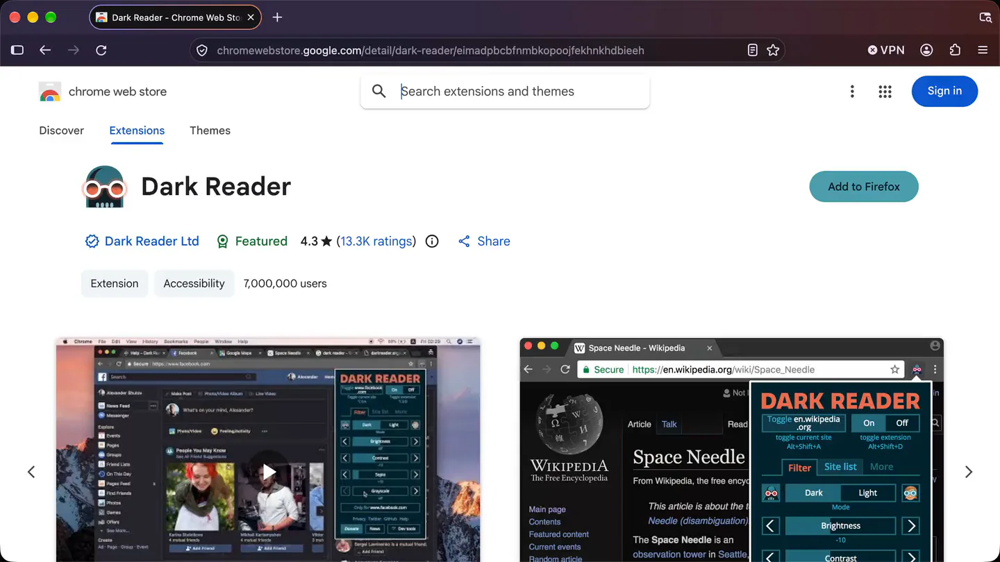

In Safari,In Firefox, every listing in the Chrome Web Store ends in a button you can't press.
“Add to Chrome” becomes “Add to Safari.”
“Add to Chrome” becomes “Add to Firefox.”
With Viaduct's Safari extension on, the button points at Safari instead. Click it once and Viaduct does the rest.
With Viaduct's store button on in Firefox, the button points at Firefox instead. Click it once and Viaduct does the rest.
One click, and it's in Safari.One click, and it's in Firefox.
Viaduct fetches the extension, converts it and signs it, right there on the store page.
Switch it on once in Safari's settings, like any other extension.
Dark Reader is in the toolbar, running inside Safari.
Viaduct fetches the extension and converts it, right there on the store page.
There's nothing to switch on. Firefox has already loaded it.
Dark Reader opens from Firefox's Extensions button.


Converting isn't the hard part. Working is.
Safari implements dozens of chrome.* APIs differently, or not at all, so a converted extension installs fine and then quietly stops working. Viaduct ships a runtime layer that patches the gaps.
Firefox drops any add-on Mozilla didn't sign when it quits, and it implements parts of chrome.* differently or not at all. Viaduct keeps yours loaded and ships a runtime layer that patches the gaps.
60+
chrome.* namespaces the runtime layer normalizes, so your extension keeps working after the move.
10
chrome.* namespaces the runtime layer adds or corrects in Firefox, so your extension keeps working after the move.
BreaksPopup buttons go dead. Background ports route by an extension id that Safari reports differently.
FixedViaduct rewrites the id so the popup reaches the background.
BreaksIts own bundled resources fail to load. Safari's resource server is case sensitive.
FixedViaduct normalizes the casing.
BreaksSafari omits onInstalled and parts of self.registration, so the worker throws at load.
FixedViaduct backfills what's missing.
BreaksSafari exposes chrome.* as immutable native objects, so extensions that patch them crash at startup.
FixedViaduct makes them writable again.
BreaksFirefox removes any add-on Mozilla didn't sign the moment it quits.
FixedViaduct loads yours again every time Firefox opens, with their settings.
BreaksIt turns on 56,000 blocking rules and Firefox allows an add-on 30,000, so none of EasyList loads.
FixedViaduct raises Firefox's limit to match Chrome's.
BreaksIt reads chrome.runtime.id where user scripts run, and Firefox leaves it out there.
FixedViaduct defines it before any user script loads.
BreaksIts background waits on storage.session.setAccessLevel, which Firefox doesn't have, so it never gets an answer.
FixedViaduct answers the call.
BreaksFirefox has no chrome.sidePanel, so an extension that lives in Chrome's side panel has nowhere to open.
FixedViaduct builds it on Firefox's own sidebar.
Native conversion, done properly.
Keeps Safari's battery life
One browser, not two
Converted extensions run inside Safari's native engine, not a second Chromium process running in the background. Faster, and far easier on your battery.
Converted extensions run inside Firefox itself, so Chrome doesn't have to stay open in the background for the sake of one extension.
2
engines running if you keep Chrome around for one extension
1
with Viaduct. The extension lives inside SafariFirefox
In Firefox too
In Safari too
Pick Firefox above the drop zone and the extension becomes a Firefox add-on that stays installed when Firefox quits, with its settings. On the Chrome Web Store, Add to Firefox does the same from the listing.
Pick Safari above the drop zone and the extension becomes a native Safari Web Extension, signed on your Mac with Xcode. A Mixed license covers both browsers.
Keeps itself up to date
Viaduct and its conversion engine update themselves, so new fixes arrive without you reinstalling anything.
Auto-updating extensions
Installed an extension from the Chrome Web Store? Turn on weekly updates with a license, and when it ships a new version Viaduct rebuilds and reinstalls it for you.
MV2 & MV3 aware
Converts Manifest V2 and V3 extensions. If one can't work in Safari, Viaduct tells you before it converts. If the maker ships an official Safari version, it points you there.
Converts Manifest V2 and V3 extensions. If one can't work in Firefox, Viaduct tells you before it converts.
Import from Chrome
Viaduct lists the extensions already installed in Chrome, Brave, Edge, Arc, Vivaldi, Opera or Chromium. Pick the ones you want and it converts them in one batch, saved settings included.
Works with Shortcuts
Shortcuts gets two actions: Convert Chrome Extension and List Converted Extensions.
Moves to a new Mac
Export your converted extensions from Settings, import the file on the new Mac, and Viaduct converts them again there.
Start free. Pay once for your browser.
Free
$0
- Convert 2 extensions
- In Safari or FirefoxIn Firefox or Safari
- Removed after 7 days
- No Web Store updates
Safari
$19one time
- Unlimited in Safari
- Firefox stays on the free plan
- Extensions stay installed
- Weekly Web Store updates
- Works on 3 Macs
Firefox
$19one time
- Unlimited in Firefox
- Safari stays on the free plan
- Extensions stay installed
- Weekly Web Store updates
- Works on 3 Macs
Both Adds Firefox for $10Adds Safari for $10
$29one time
- Unlimited in SafariFirefox
- Unlimited in FirefoxSafari
- Extensions stay installed
- Weekly Web Store updates
- Works on 3 Macs
Questions
Will my Chrome extension actually work?
Most do. Before converting, Viaduct checks the extension for the browser you picked and tells you if it can't work there, for example when a file it needs is missing. Features built on Chrome-only APIs, like some OAuth sign-in flows, still won't work after conversion. If the maker ships an official Safari version, Viaduct points you to it.
What do I need to run Viaduct?
A Mac on macOS 13 or later, and Xcode, which is free from Apple, because Apple requires it to sign extensions. Viaduct's setup walks you through signing in to it once with your Apple ID (a free one works), so Safari keeps your extensions on after it quits.
A Mac on macOS 13 or later, and Firefox. Viaduct asks once for Full Disk Access so it can read your Firefox profile, and it has to stay on in Login Items so it can load your add-ons each time Firefox opens. Firefox needs neither Xcode nor an Apple ID.
Do I need to know how to code to use Viaduct?
No. Drop an extension in and get it in Safari or Firefox. Viaduct does the building and the signing.
Does Viaduct run on an Intel Mac?
Yes. Viaduct is a universal app, so the same download runs natively on Intel and Apple Silicon. There's one build, not two, and Rosetta never comes into it.
Which license do I need?
The one for the browser you use. A Safari or Firefox license makes that browser unlimited, and Mixed, the Both card, covers the two for $10 more. Pricing shows the Safari license here. Choose Firefox at the top of the page to see that one.Pricing shows the Firefox license here. Choose Safari at the top of the page to see that one.
I bought Viaduct Pro. What do I have now?
Mixed. Your key keeps working, and Safari and Firefox are both unlimited.
How does Viaduct keep add-ons in Firefox?
Firefox only keeps add-ons that Mozilla has signed. So each time Firefox opens, Viaduct briefly turns on Firefox's remote debugging, loads your add-ons, and turns it off again. That leaves one Firefox setting changed while you have add-ons: Firefox won't ask before a debugger connects. Viaduct tells you before your first one, and removing your last add-on puts the setting back. Firefox restarts once when the first add-on goes in, and your tabs come back.
Why isn't Viaduct on the Mac App Store?
The build tools Viaduct drives aren't allowed inside the App Store sandbox, so it ships as a notarized direct download instead. Same Apple notarization, just outside the store.